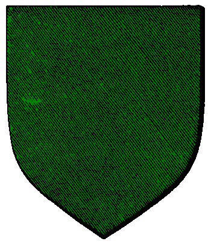

| Übersicht,
Gebäude, Städte und Produktion |
|
Ertragsstärke von Pumpen ?
|
| Borgal (RIP) |
Wie sieht das denn nun eigentlich mit der Ertragsstärke von Pumpen aus? Lohnt es sich, bzw bringt es überhaupt was die Felder aufzuwerten oder nicht ?
Die Frage ist ja ob eine Pumpe nun ein weiterverarbeitendes oder ob es ein normales Gebäude ist. Wenn es ein weiterverarbeitendes Gebäude ist dann dürfte es ja eigentlich nicht Wetterabhängig sein (was es aber schon war) also müsste es ein ganz normales Prodgebäude sein. Was dann natürlich wieder die Frage aufbringt ob es ne Jahreszeit gibt wo man mit ner Pumpe nur 10 % macht?
Und wenn es ein normals Gebäude ist dann müsste eigentlich auch die Ertragsstäke was bringen, oder ?
Teil doch bitte mal eure Erfahrungen hier mit.
Danke schonmal
mfg
Borgal |
07.05.04 22:59

|
|
| Xyrotos (RIP) |
die 10% regel trifft auf die petro pumpe natürlich nicht zu. es sind nur jägerhütten, steinbrüche, bhs und holzhütten betroffen.
landaufwerten bringt nichts. |
08.05.04 2:01
|
|
| Borgal (RIP) |
also ist es mehr oder weniger ein weiterproduzierendes Gebäude ?
Also müsste es ja eigentlich auch wetterunabhängig produzieren. |
08.05.04 4:12
|
|
Zadar
 |
Es produziert ja auch Wetter unabhängig ;) |
08.05.04 12:55
 |
|
| Areas Tarán (RIP) |
Also ich kann irgendwie nicht verstehen warum das Aufwerten nichts bringt, es ist eine Pumpe, eine die einen Rohstoff aus der Erde fördert ... genaugenommen aus einer Ölquelle, wertet man diese auf, sprich man erhöht den Ertrag der Ölquelle sollte sich doch logischerweise auch der Ertrag der darauf befindlichen Pumpe erhöhen, oder?
Und mit dem Wetterunabhängig, da habe ich auch wieder anderes gehört und zwar dass sich das Wetter genauso auf Pumpen wie auf Steinbrüche, Jagdhütten usw. auch auswirkt. |
08.05.04 18:45
|
|
| Feyan Savry (RIP) |
Ne Frage:
Bringt das Aufwerten des Landes unter einem ProdGebäude nur etwas bei Steinbrüchen,Bauernhöfen,Jagdhütten und Holzhütten?
Nicht bei Eisen- oder Goldminen? |
08.05.04 19:48
|
|
| Ferty (RIP) |
Doch, alle Minen profitieren vom Gelände, Pumpen sind das die einzige Ausnahme, welche die Systematik ein wenig inkonsistent erscheinen lässt. |
08.05.04 21:03
|
|
| Feyan Savry (RIP) |
Okay, danke Ferty, dann hatte irgendwo falsch aufgeschnappt, und gewundert hätte es mich ohnehin ;) |
08.05.04 21:45
|
|
| Koveras Alvaron (RIP) |
vielleicht kommt es ja noch für pumpen - wär zumindest denkbar |
09.05.04 14:54
|
|
| Rook Garthai (RIP) |
Ist doch total unsinnig, es tut mir leid, Landaufwerten bringt nichts, mit welcher Begründung ??? Gut mann kann nicht von oben ein Tiefenreserveur ausbauen schon klar, lass ich mir ja auchnoch gefallen. Aber warum hat dann Wetter Einfluss ???? Erdbeben oder was ? was kratzt es denn ein Ölvorkommen, wenn oben scheiss Wetter is ? |
26.05.04 11:20
|
|
Poena Schattenherz
 |
Ich meine mal, das hat Balancinggründe.
Schließlich produzieren die Pumpen auch das ganze Jahr hindurch.
|
26.05.04 12:20
|
|
| Leandran (RIP) |
Das tun Minen auch und die werden vom Ertrag des Feldes beeinflusst... |
26.05.04 12:30
|
|
| Gryphios Pridorius (RIP) |
nein steinminen z.b. produzieren im sommer nur 10%....was bei pumpen nicht der fall ist |
26.05.04 19:45
|
|
| Wasil (RIP) |
Pumpen sind auch nicht ganz witterungsunabhängig. Indes kann ich bestätigen, dass ich mit dem Düngen der Ölfelder wenig Erfolg hatte :) |
27.05.04 8:42
|
|
| Davatar (RIP) |
was mich vor allem nervt ist, dass man 30 AP braucht, um auf ein Pumpenfeld zu laufen *grummel* |
28.05.04 16:13
|
|
| Bogan Feuerherz (RIP) |
wenn sauschlechtes wetter ist sind verständlich die pumpenarbeiter demotieveirt und arbeiten nicht mit vollem elan ... is doch klar gg |
28.05.04 23:40
|
|
Tarik Laertes
 |
Frage zu den Ausbauten:
Ich hatte 3 Ausbauten in Form freier Sauger und dabei eine Produktion von 43.
Dann habe ich einen verklavten Arbeiter eingesetzt. Die Produktion hat sich nicht verändert. Warum?
Kann man nur eine von beiden Ausbauarten haben? |
30.05.04 18:24
|
|
| Leandran (RIP) |
- 10.01. Pumpen besitzen nun eine zweite Ausbauart "freie Arbeiter". Für die Produktion gilt immer nur der höhere Wert der beiden Ausbauten. Freie Arbeiter kosten Schmuck und Kleidung statt Sklaven und sind teurer in der Anschaffung. |
30.05.04 18:33
|
|
Tarik Laertes
|
DAnke! |
30.05.04 18:45
|
|
Übersicht,
Gebäude, Städte und Produktion
|